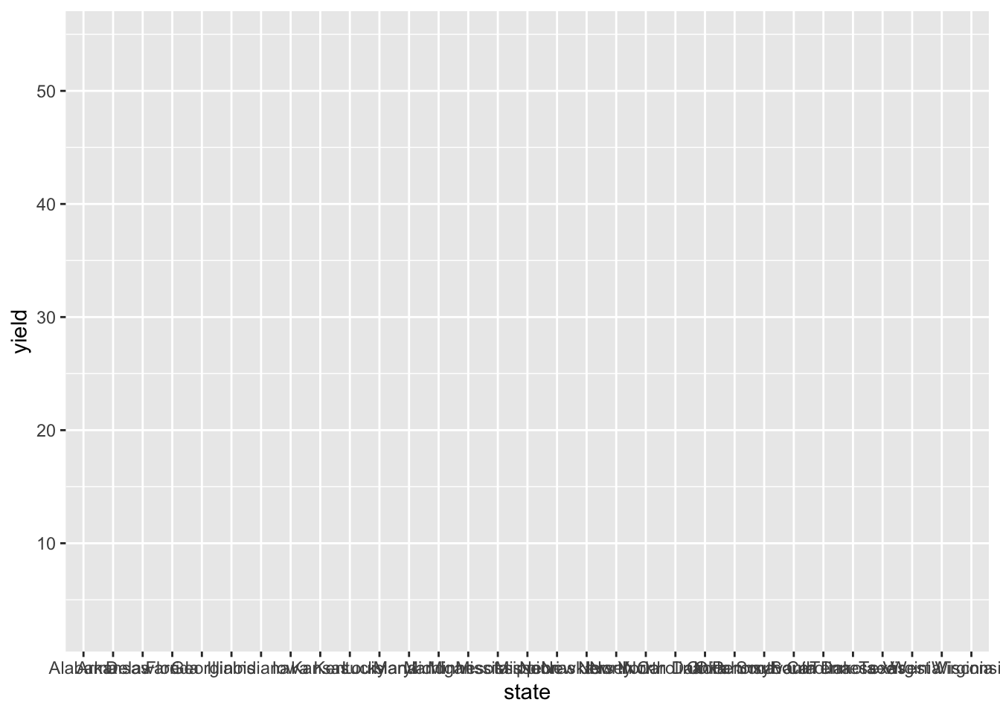
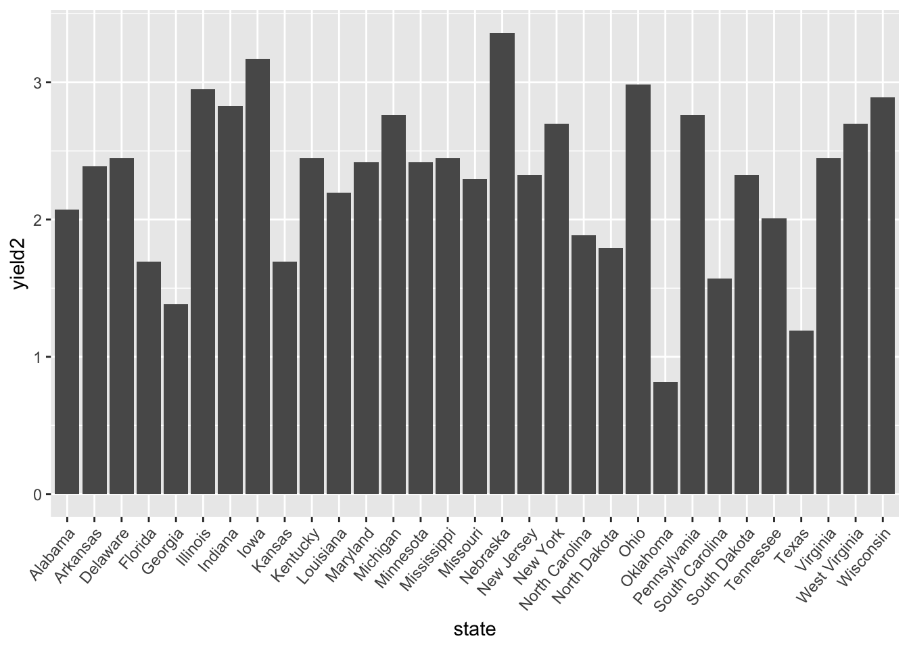

Gráficos
Introdução
Vários pacotes do R serão utilizadas neste exercíco e carregados no ambiente logo antes do local onde as funções dos mesmos serão utilizadas. O pacote ggplot2 pode ser carregado individualmente com a função library(ggplot2).
Alternativamente, pode-se carregar o pacote tidyverse, que é uma suíte de vários pacotes desenhados para ciência de dados e que compartilham uma filosofia comum de design, gramática e estrutura de dados.
library(tidyverse)O gráfico em ggplot2
Para criar um gráfico obvivamente precisamos de um conjunto de dados. As possibilidades são várias:
- Criar um conjunto de dados entrando os valores manualmente
- Simular um um conjunto de valores
- Importar dados de um arquivo externo (excel, csv, txt, etc.)
- Carregar dados já disponíveis em pacotes
No R, o pacote datasets contém diversos conjuntos de dados que podem ser utilizados para fins didáticos. Neste tutorial, utilizaremos dados que estão disponíveis no pacote agridat, que é uma coleção de dados de experimentos agrícolas. Após carregar o pacote, basta apenas criar o data frame dos dados atribuindo um nome ao objeto, no caso chamaremos de dat1.
library(agridat)
dat1 <- nass.soybeanDefinindo o plano
A primeira função que inicializa um objeto ggplot é a ggplot onde se define o conjunto de dados e elementos de estéticas do gráfico que será aplicado nas subsequentes camadas - a menos que tenha uma outra especificação na camada específica, que se sobrepõe à estética definida em ggplot(). Um exemplo seria definições de cores, formas, etc. O primeiro elemento da função é o conjunto de dados. Se usado sem outros elementos, o gráfico tem apenas o plano básico, sem qualquer elemento.
ggplot(dat1)
A programação de gráficos em ggplot2 é feita na forma de camadas que são adicionadas (por isso o sinal de +) ao plano básico do gráfico gerado pela função ggplot(). Antes de iniciarmos o gráfico, veja abaixo dois estilos de programar. A primeira é utilizando o símbolos de pipe e a segunda da maneira convencial. As duas geram o mesmo resultado.
g1 <- dat1 %>%
ggplot(aes(state, yield))g1 <- ggplot(dat1, aes(state,yield))Notaram a diferença? é muito sutil, apenas a primeira linha que entra o conjunto de dados seguido do sinal do pipes (%>%). Com isso, não há necessidade de colocar o nome do dataframe dentro da função ggplot. Mais em frente veremos as vantagens no uso de pipes quando precisaremos alterar algo no conjunto de dados antes de montar o gráfico.
Agora iremos verificar o resultado do objeto g1 que foi criado. Para isso, basta digitar o nome do objeto.
g1
Como podem notar, a função ggplot() define o plano com os eixos x e y, no caso “state” e “yield”, respectivamente. Ainda não foi possível visualizar os dados de “yield” pois a camada que define a forma geométrica do objeto e outros elementos ainda não foi adicionada. Veja na referência todos os tipos de camadas que combinam dados, estética do mapeamento dos objetivos, um objeto geométrico, uma estatística e uma posição de ajuste.
Adicionando camadas
Para mostrar os dados, precisamos adicionar as camadas no gráfico. Para barras verticais, usaremos a função geom_col(). Uma vez que o objeto g1 já contém o plano, basta apenas adicionar, com um sinal positivo (+), a camada com as barras verticais.
g1 +
geom_col()O gráfico de barras é gerado automaticamente. Note alguns problemas. Há uma sobreposição no nome dos estados no eixo x e o valor de produtividade em bushels é extremante alto. Qual o motivo? lembre que para cada estado há valores de produtividade de 1924 até 2011! Há duas alternativas nesse caso, dependendo da pergunta que queremos fazer: 1) calcular o valor médio de produtividados no anos todos (ou em um período de tempo) ou 2) selecionar apenas um ano. Por ora vamos utilizar apenas os dados do ano mais recente, 2011.
Precisaremos lançar mão de algumas funções do tidyverse para selecionar os dados que queremos. No caso a função filter() para filtrar apenas o ano desejado e mutate para transformar os valores de bushels per acre para toneladas por hectare. Adicionaremos uma função no final que define atributos do tema theme(), no caso para fazer a rotação do texto dos elementos do eixo x em 50 graus.
Note que usando pipes não precisamos atualizar os objetos, apenas programar linha a linha como se fosse uma receita de bolo. Aprenda mais sobre pipe aqui
g11 <- dat1 %>%
filter(year == "2011") %>%
mutate(yield2 = yield * 0.0628) %>%
ggplot(aes(state, yield2)) + # usamos agora yield2 no y
geom_col() +
theme(axis.text.x = element_text(angle = 50, hjust = 1))
g11
Quando os nomes dos elementos são relativamente grandes, o ideal é inverter os eixos e mostrar as barras na horizontal. Isso é feito usando-se a função coord_flip().
g11 +
coord_flip()Ajustes de layout
A visualização ficou melhor mas ainda não está bom. Não é fácil identificar os estados com maior ou menor produtividade. Para facilitar, um procedimento simples é ordenar os estados segundo os níveis de produtividade usando a função reorder() na estética do gráfico reorder(state, yield2). Iremos também retirar o atributo que rotaciona o elemento de texto do eixo x (agora a produtividade).
g12 <- dat1 %>%
filter(year == "2011") %>%
mutate(yield2 = yield * 0.0628) %>%
ggplot(aes(reorder(state, yield2), yield2)) +
geom_col() +
coord_flip()
g12Note que o gráfico de barras sempre deve iniciar no valor mínimo da escala, onde aqui o natural é o valor zero. No entanto, considerando que mais da metade da área do gráfico contém área com barras, o ideal nesse caso é usar um gráfico de pontos, o qual não exige que tenha um baseline e facilitará a discriminação entre os estados. Para isso basta usar geom_point() ao invés de geom_col. Como não precisamos de um gráfico muito largo, considerando a amplitude da produtividade, vamos ajudar o tamanho do gráfico nos atributos do chunk {r fig.height=7, fig.width=5}.
dat1 %>%
filter(year == "2011") %>%
mutate(yield2 = yield * 0.0628) %>%
ggplot(aes(reorder(state, yield2), yield2)) +
geom_point() +
coord_flip() Adicionando variável
No gráfico anterior mostramos os valores de produtividade por estado americano no ano de 2011. No entanto, não sabemos se os estados com maior produtividade são também os maiores produtores em termos de área plantada. Essa informação consta no conjunto de dados na variável acres.
Podemos mostrar uma segunda variável que será identificada com uma coloração, tamanho ou forma do símbolo dos pontos, dependendo da situação, auxiliado por uma legenda. Basta adicionar na estética do ggplot() o atributo color = acres. A paleta de cores para valores contínuos é definida automaticamente, mas pode ser modificada posteriormente. Em geom_point() podemos aumentar o tamanho do ponto para facilitar a comparação.
dat1 %>%
filter(year == "2011") %>%
mutate(yield2 = yield * 0.0628) %>%
ggplot(aes(reorder(state, yield2), yield2, color = acres)) +
geom_point(size = 3) +
coord_flip() Deve-se ter certo cuidado ao se utilizar cores devido a dificuldade de algumas pessoas em discriminar as tonalidades. Para o nosso caso, o melhor é utilizar tamanho diferente dos pontos em função do valor da variável. Para isso, usaremos o atributo size na estética do gráfico para a variável de interesse que no caso é acres. Vamos aproveitar e utilizar uma cor diferente para os pontos e retirar o tamanho anterior que havíamos definido em geom_point.
dat1 %>%
filter(year == "2011") %>%
mutate(yield2 = yield * 0.0628) %>%
ggplot(aes(reorder(state, yield2), yield2, size = acres)) +
geom_point(color = "orange") +
coord_flip()Pronto, chegamos em um formato de gráfico que contém a informação que queremos apresentar. Na sequencia, iremos trabalhar na apresentação do gráfico objetivando a publicação. Antes disso, vamos transformar o valor de área plantada para hectares apenas incluindo a fórmula diretamente no atributo size.
Preparando para publicar
Precisamos alterar os nomes das variáveis dos eixos, alterar o título da legenda eo adicionar título, subtítulo e rodapé no gráfico, o que é feito usando a função labs. A cor cinza do fundo gráfico pode ser trocada facilmente usando-se um dos vários temas do ggplot. Eu particularmente gosto do theme_minimal() que mantém o grid de maneira sutil e retira as bordas do gráfico. A posição da legenda pode ser alterada com o atributo de posição na função theme(). Por fim, nas opções do “chunk” definimos a largura e a altura da figura para melhor distribuir os elmentos dentro do gráfico.
g13 <- dat1 %>%
filter(year == "2011") %>%
mutate(yield2 = yield * 0.0628) %>%
ggplot(aes(reorder(state, yield2), yield2, size = acres / 0.404686 / 1000000)) +
geom_point(color = "orange") +
coord_flip() +
labs(
y = "Produtividade (ton/ha)",
x = "",
title = "Produtividade media de milho",
subtitle = "Ano de 2011",
caption = "Fonte: NASS USDA",
size = "Area plantada (ha)"
)+
theme_minimal()+
theme(legend.position = "bottom")
g13Como última etapa precisamos salvar este gráfico em um formato de imagem, cuja melhor opção é o formato PNG. A função ggsave() permite também definir as dimensões do gráfico bem como a resolução da imagem.
g13 
ggsave("plots/g1.png", width = 5, height = 6, dpi = 600)Gráfico interativo
Com gráfico feito em ggplot2, uma certa interatividade pode ser adicionada por meio do pacote plotly. A função ggplotly() transforma o gráfico para um gráfico plotly. Vejam como é fácil e o resultado ao invés de uma figura estática é um widget html que pode ser incorporado em páginas da web.
library(plotly)##
## Attaching package: 'plotly'## The following object is masked from 'package:ggplot2':
##
## last_plot## The following object is masked from 'package:stats':
##
## filter## The following object is masked from 'package:graphics':
##
## layoutggplotly(g13)